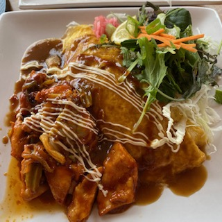
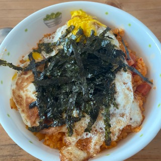
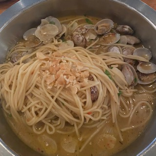
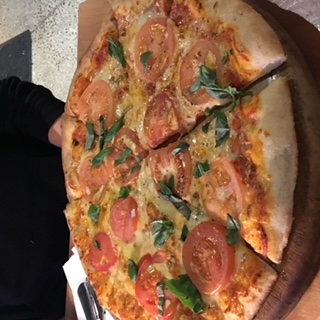
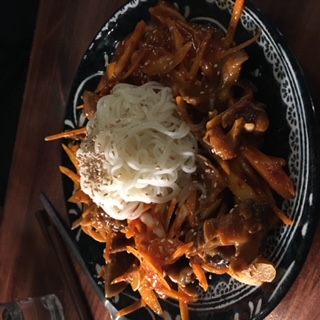

Spicy Chicken Omurice |

Stir-Fried Spicy Chicken Omurice |
$22 Food Description: Spicy Chicken with Stir-Fried Rice. In Stir-Fried Spicy Chicken, we use these vegetables: Cabbage, and Carrot. In Stir-Fried Rice, we use these vegetables: Carrot, Edamame, and Omelette Egg on the top with ketchup sauce. |
|---|---|---|
Kimchi Fried-Rice |

Kimchi Fried Rice |
$17.5 Food Description: Kimchi Fried-Rice is fried-rice with Kimchi. Kimchi is Korean Traditional Food, which basically is Chinese cabbage with spicy sauce. In Fried-Rice, we use these ingredients: Onion, Spring Onion, and Ham. |
Vongole Pasta |

Vongole Pasta |
$21.5 Food Description: Vongole Pasta is one of the pastas from Italy. In Vongole Pasta, we use these ingredients: Pasta Noodle, Onion, Garlic, Parsley, and Manila Clams. |
Tomato Basil Pizza |

Tomato Basil Pizza |
$17 Food Description: In Tomato Basil Pizza, we use these ingredients: Flour, Tomato, Basil, and Cheese. |
Spicy Whelk & Calamari |

Noodle with Spicy Whelk & Calamari Salad |
$25 Food Description: For Noodle, we use a Korean Nooodle called Carding Noodle, which is Thin Wheat Flour Noodles. In Spicy Whelk & Calamari Salad, we use these ingredients: Whelk, Calamari, Cabbage, Carrots, and Carding Noodle. |